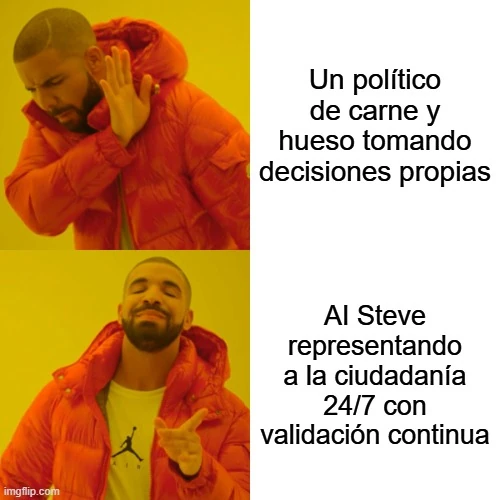

estrategIA #58 ·
Un candidato disponible a cualquier hora
El contexto
AI Steve era el caso de candidatura vinculada a una IA que examinaba este número. La comparación con un político de carne y hueso concentra el debate en la disponibilidad permanente y la consulta ciudadana, sin resolver quién asume la responsabilidad de decidir.
Publicado en: estrategIA #58: Cuando la IA aspira a un escaño: el caso de AI Steve y el futuro de la democracia
Leer el texto de la imagen
Un político de carne y hueso tomando decisiones propias AI Steve representando a la ciudadanía 24/7 con validación continua
Marca de la herramienta visible en el original: imgflip.com.